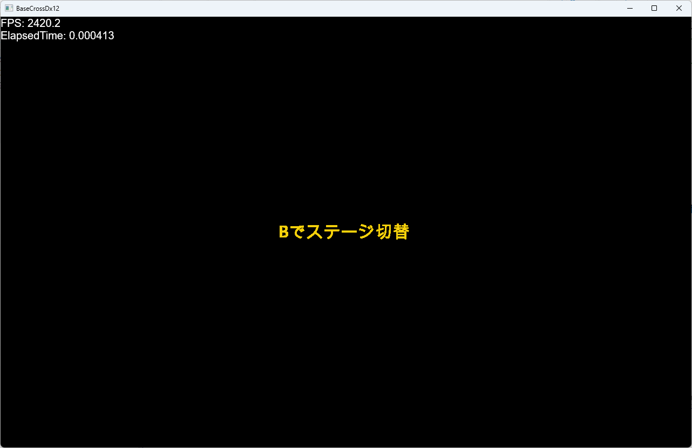
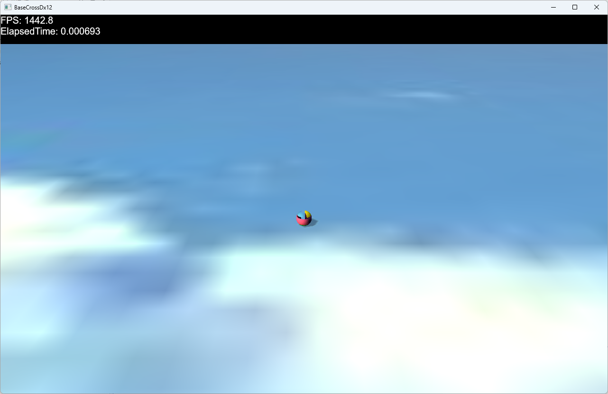

void Scene::CreateAssetResources(ID3D12Device* pDevice, ID3D12GraphicsCommandList* pCommandList)
{
//中略
//ステージ作成
ResetActiveStage<TitleStage>(pDevice);
}
このTitleStageにはBでステージ切り替えという文言があり、ここでコントローラのBボタンを押すと、ステージが切り替わります。
//--------------------------------------------------------------------------------------
/// タイトルスプライト
//--------------------------------------------------------------------------------------
class TitleSprite : public GameObject {
public:
TitleSprite(const std::shared_ptr<Stage>& StagePtr):
GameObject(StagePtr)
{}
//破棄
virtual ~TitleSprite() {}
//初期化
virtual void OnCreate() override;
//更新
virtual void OnUpdate(double elapsedTime)override {}
};
Character.cppには、TitleSprite::OnCreate()関数のみ記述されています。
void TitleSprite::OnCreate() {
float HelfSize = 0.5f;
//頂点配列
std::vector<VertexPositionColorTexture> vertices = {
{ VertexPositionColorTexture(Vec3(-HelfSize, HelfSize, 0),Col4(1.0f,1.0f,1.0f,1.0f), Vec2(0.0f, 0.0f)) },
{ VertexPositionColorTexture(Vec3(HelfSize, HelfSize, 0), Col4(1.0f, 1.0f, 1.0f, 1.0f), Vec2(1.0f, 0.0f)) },
{ VertexPositionColorTexture(Vec3(-HelfSize, -HelfSize, 0), Col4(1.0f, 1.0f, 1.0f, 1.0f), Vec2(0.0f, 1.0f)) },
{ VertexPositionColorTexture(Vec3(HelfSize, -HelfSize, 0), Col4(1.0f, 1.0f, 1.0f, 1.0f), Vec2(1.0f, 1.0f)) },
};
//インデックス配列
std::vector<uint32_t> indices = { 0, 1, 2, 1, 3, 2 };
auto ptrTransform = GetComponent<Transform>();
ptrTransform->SetScale(256.0f,64.0f, 1.0f);
ptrTransform->SetRotation(0.0f, 0.0f, 0.0f);
ptrTransform->SetPosition(0.0f, 0.0f, 0.0f);
SetAlphaActive(true);
//頂点とインデックスを指定してスプライト作成
auto PtrDraw = AddComponent<SpPCTSpriteDraw>(vertices, indices);
}
ここでは、2次元の頂点とインデックスを作成して、それをパラメータにSpPCTSpriteDrawコンポーネントを実装しています。
void TitleStage::OnUpdate(double elapsedTime) {
//コントローラチェックして入力があればコマンド呼び出し
m_InputHandler.PushHandle(GetThis<TitleStage>());
}
すると以下のようにイベントを取り出せます
void TitleStage::OnPushB() {
//ステージ推移
Scene::Get()->ResetActiveStage<GameStage>(m_pDevice);
}
このようにScene::CreateAssetResources()関数で記述したようにResetActiveStage()関数をGameStageをテンプレート引数で記述することで、GameStageに推移します。